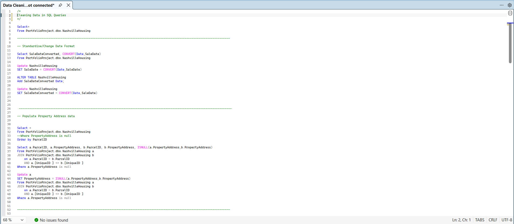
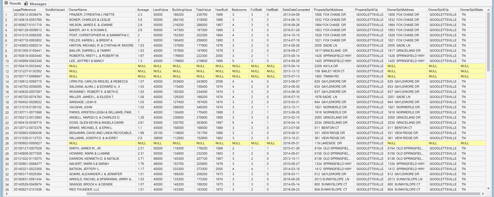

Nashville Housing Data Cleaning
A SQL Server data cleaning project focused on transforming raw housing data into a cleaner, more structured and analysis-ready dataset.

Project Summary
This project demonstrates a structured SQL data cleaning workflow using a raw Nashville housing dataset. The aim was to improve the quality, consistency and usability of the data before it could be used for analysis, reporting or business intelligence.
The cleaning process involved standardising date fields, populating missing property address values, restructuring combined address fields, standardising inconsistent categorical values, identifying duplicate records and removing columns that were no longer required.
This project highlights one of the most important foundations of analytics: ensuring that data is accurate, consistent and well-structured before insights are produced.
Tools Used
- SQL Server for data cleaning and transformation
- T-SQL for writing the full cleaning workflow
- String functions for address parsing and restructuring
- CASE statements for categorical value standardisation
- Self-joins for handling missing property address values
- CTEs and window functions for duplicate detection
- Data quality checks to improve analysis readiness
Project Preview

SQL Cleaning Workflow
The project applies a full SQL-based cleaning process to transform raw housing records into a more reliable and structured dataset. The workflow focuses on resolving common real-world data quality issues that can affect the accuracy of future analysis.
Cleaning Focus Areas
- Standardising sale date fields
- Populating missing property address values using matching parcel records
- Splitting property addresses into separate address and city fields
- Splitting owner addresses into address, city and state fields
- Standardising inconsistent
SoldAsVacant values
- Identifying and removing duplicate records using
ROW_NUMBER()
- Removing redundant columns after cleaner replacement fields were created
Key Skills Demonstrated
- SQL data cleaning
- T-SQL scripting
- Data quality improvement
- Missing value handling
- Self-joins
- String manipulation
- Address field restructuring
- CASE statement logic
- CTEs and window functions
- Duplicate detection and removal
- Preparing raw data for future analysis
Why This Project Matters
Clean data is essential for accurate analysis and reliable reporting. This project shows my ability to take a raw, imperfect dataset and apply a logical SQL cleaning process to improve its structure, consistency and usability.
It demonstrates practical data preparation skills that are directly relevant to analyst, business intelligence and reporting roles, where raw datasets often need to be cleaned before meaningful insights can be produced.
The full SQL workflow, including the detailed cleaning queries and documentation, is available in the GitHub repository.